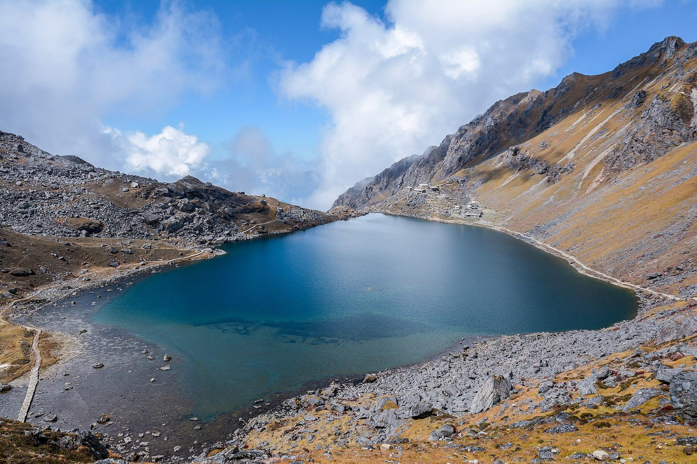
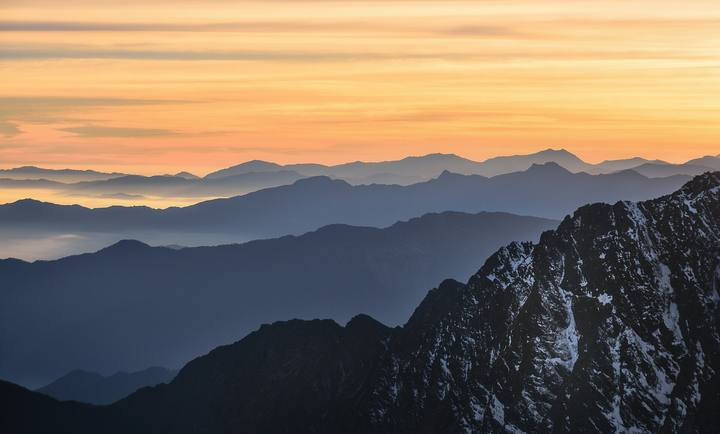

Gosaikunda
A short trek from Dhunche up a forested ridge to the sacred Gosaikunda lakes at 4,380 m. It gains 2,400 m in three days, so pacing matters far more than distance.


- Duration
- 5–7 days
- Distance
- 40 kmapproximate
- Highest point
- 4,380 mGosaikunda · 14,370 ft
- Highest night
- 4,380 mGosaikunda
- Difficulty
- ModerateTeahouse lodges
- Best months
- Apr–May, Oct–Nov
Is this trek right for me?
The walking
6 days in all. Most walking days are 3 to 4 hours on foot, and the longest is about 8 hours. Five to seven hour days with real climbs, usually below 4,500 m.
The height
You sleep as high as 4,380 m. Most people feel the altitude at this height. The plan includes the rest days you need: do not shorten it.
Where you sleep
In lodges every night: a simple twin room, a shared bathroom and hot meals in a warm dining room.
The help you need
The rules require a licensed guide on this route. A porter to carry your bag is your choice.
What it costs
A guided trip with a trekking company usually costs USD 350 to 500 a person, going by the prices 10 companies published for 2026.
Overview
Gosaikunda is a cluster of high lakes on the ridge that divides the Langtang valley from Helambu, and one of the most important pilgrimage sites in Nepal. Hindus hold that Shiva made the main lake by driving his trident into the mountain; the Trishuli river that drains it takes its name from the story. The trail from Dhunche is short, direct and almost entirely uphill.
That directness is the problem. Dhunche is at 1,960 m and the lake lodges are at 4,380 m, and most itineraries cover the difference in two walking days. That is two to three times the rate of ascent usually advised above 3,000 m, and every year people are carried or flown down from the lake with altitude illness, pilgrims especially. The plan below adds a night at Laurebina to slow the climb. It costs one day and is worth it, above all if this is your first time over 4,000 m.
The ridge itself is a fine walk: oak and rhododendron forest to Chandanbari, then open hillside with a skyline that runs from the Annapurnas past Manaslu and Ganesh Himal to Langtang Lirung. Lodges are simple, and at their busiest around the Janai Purnima full moon in August, when thousands of pilgrims climb to bathe in the lake. From December to March the lake is frozen and the path above Laurebina holds snow and ice.
Highlights
- Gosaikunda, Bhairav Kunda and Saraswati Kunda under bare rock ridges
- The view from Laurebina, from the Annapurnas to Langtang Lirung
- Oak and rhododendron forest that is red panda habitat
- Yak cheese and the small monastery at Chandanbari
- The Janai Purnima pilgrimage at the August full moon
Moderate: Short days on a clear trail, but it reaches 4,380 m very quickly and the upper path is narrow, exposed and icy in winter.
Altitude profile
Height at the end of each day, with the high points in between. Dots are the places you sleep.
2 nights gain height faster than the usual guideline. That is common on standard itineraries, but it is where problems start. Check how you feel before each of these climbs.
- Day 3, Laurebina: Sleeping altitude rises 580 m, over the 500 m guideline, with no rest night before or after.
- Day 4, Gosaikunda: About 1400 m gained above 3000 m without a rest night.
Try adding a night in the acclimatization checker · Check your symptoms
Day by day
About 17–22 h of walking in total. Times are for a steady pace with short breaks; add more for photos and tea.
-
Day1
Drive from Kathmandu to Dhunche
The Pasang Lhamu Highway through Trishuli Bazaar, slow and rough in places and on temporary repairs since the August 2026 flood. Park permits are checked as you enter Dhunche. A night at 1,960 m is a useful first step up from Kathmandu.
5 places to stay in Dhunche, such as Dunche Guest House, Hotel Ki-yang and Hotel Langtang View. See them
Transfer- Sleep at
- 1,960 m
- Change
- +560 m
- Drive
- 6–8 h
-
Day2
Dhunche to Chandanbari
Cross the Trishuli Khola below town, then climb without a break through oak and rhododendron forest, past the teahouses at Deurali and Dimsa. You finish 1,370 m above Dhunche, far more than the usual daily guideline, so walk slowly, drink often and expect to feel the height in the evening.
11 places to stay in Chandanbari, such as होटल ग्रिन हिल, Hotel Tashi Delek and Hotel Peace Lodge. See them
- Sleep at
- 3,330 m
- Change
- +1,370 m
- Walking
- 5–6 h
-
Day3
Chandanbari to Laurebina
Chandanbari to Cholangpati to Laurebina
A short day on purpose. The trail leaves the forest at Cholangpati and climbs open hillside to the lodges at Laurebina. Many itineraries go straight on to the lake; stopping here roughly halves the day's gain and is the best protection against altitude illness on this route.
3 places to stay in Laurebina, such as Hotel Mount Rest View and Hotel Morning View. See them
Watch this gainSleeping altitude rises 580 m, over the 500 m guideline, with no rest night before or after.
- Sleep at
- 3,910 m
- Change
- +580 m
- Walking
- 3–4 h
- Distance
- 5 km
-
Day4
Laurebina to Gosaikunda
Climb to the chorten on the ridge, then follow a narrow path cut across a steep slope, with Saraswati Kunda and Bhairav Kunda below you, to the lodges above the main lake. Walk round the lake in the afternoon. In winter this traverse holds ice and is the most dangerous part of the trek.
4 places to stay in Gosaikunda, such as Hotel Namaste, Hotel Lake Side and Hotel Tibet. See them
Watch this gainAbout 1400 m gained above 3000 m without a rest night.
- Sleep at
- 4,380 m
- Change
- +470 m
- Walking
- 3–4 h
- Distance
- 4 km
-
Day5
Gosaikunda to Dhunche
Gosaikunda to Laurebina to Chandanbari to Dhunche
All the height comes off in one day: 2,400 m of descent on stone steps and forest path. Knees and toes take the punishment, so use poles and stop for a proper lunch at Chandanbari. Sleeping there and finishing next morning is a reasonable alternative.
5 places to stay in Dhunche, such as Dunche Guest House, Hotel Ki-yang and Hotel Langtang View. See them
- Sleep at
- 1,960 m
- Change
- −2,420 m
- Walking
- 6–8 h
-
Day6
Drive back to Kathmandu
The same road back through Trishuli Bazaar. Delays for landslides and roadworks are routine, so keep the evening free.
Transfer- Sleep at
- 1,400 m
- Change
- −560 m
- Drive
- 6–8 h
Ways to change it
Straight from Chandanbari to the lake
The common five-day plan skips the night at Laurebina and climbs 1,050 m from Chandanbari to Gosaikunda in a single day. It suits people already acclimatized from Langtang or another recent trek. For anyone coming straight from Kathmandu it is where the trouble starts.
Over the Laurebina La to Helambu
Continue past the lake over the 4,610 m pass to Phedi, Ghopte and Tharepati, then walk out along the Helambu ridge to Sundarijal in three or four more days. The far side is rough and remote, and often under snow from December to March.
From the Langtang valley
Coming out of Langtang, climb from the gorge to Thulo Syabru and on to Chandanbari instead of starting at Dhunche. You arrive already acclimatized, which makes this the safest way to reach the lake.
From Sundarijal in reverse
Walking in through Chisapani, Kutumsang and Tharepati takes about five days to the lake and spreads the ascent far better, at the price of crossing the Laurebina La on the way up.
Route map
The map loads when you scroll here. It needs a connection the first time; tiles you have viewed stay available offline.
The solid line follows footpaths mapped in OpenStreetMap. It is a guide to where the route goes, not a navigation track: trails are rerouted after landslides, so follow the signs and people on the ground. Marker positions come from OpenStreetMap where we could match a place, and from our own estimates elsewhere.
Download the trail for a map app A GPX file with 34 km of mapped path and every stop. It opens in free apps such as Organic Maps.
When to go
- January: difficult
- February: difficult
- March: good
- April: best time
- May: best time
- June: difficult
- July: difficult
- August: difficult
- September: good
- October: best time
- November: best time
- December: good
October and November are clear and cold. April and May are warmer, with rhododendron on the ridge and hazier views. From December to March the lake freezes and the traverse above Laurebina holds snow and ice; go only with microspikes and a guide who knows the conditions. The monsoon is wet and cloudy, though the Janai Purnima full moon in August brings thousands of pilgrims regardless.
Permits and guide rules
Guide required. The Nepal Tourism Board has required foreign trekkers to hire a licensed guide since April 2023, though checks on the trail are inconsistent. On this route a guide's main job is to hold your pace down, spot altitude illness early and organize a descent in the dark if it comes to that. In winter they also judge whether the icy traverse above Laurebina is safe to cross.
Langtang National Park
National parkLangtang National Park entry permit · Department of National Parks and Wildlife Conservation
| Foreign nationals | NPR 3,000 | person, single entry |
| SAARC nationals | NPR 1,500 | person, single entry |
| Nepali citizens | NPR 100 | person |
Where: At the park checkpoint in Dhunche on the drive to Syabrubesi, or in advance at the Tourist Service Centre in Bhrikutimandap, Kathmandu.
The Nepal Tourism Board and current guides agree on NPR 3,000 and NPR 1,500. Some agencies add 13% VAT to the foreigner fee (NPR 3,390); we could not confirm that it is charged, so carry the difference. NPR 100 for Nepali citizens is the standard mountain-park rate; the tourism board's page still shows an older figure.
TIMS card
RegistrationTrekkers' Information Management System card · Nepal Tourism Board and the Trekking Agencies' Association of Nepal
| Foreign nationals | NPR 2,000 | person, per trek |
| SAARC nationals | NPR 1,000 | person, per trek |
Where: Only through a registered trekking agency, which applies in the Nepal Tourism Board's online system with your route and your guide's details. Individual trekkers can no longer buy one over the counter.
Since the revised rules of 31 March 2023 the card is tied to trekking with a licensed guide on the tourism board's listed routes. It is not used in Khumbu, where the municipality's Trek Card took its place in 2017. For restricted areas the published rules pull both ways: TAAN's pages say TIMS applies in every trekking area, restricted ones included, yet also list visitors holding Department of Immigration permits among those who do not need one, and agencies disagree. Your agency, which is compulsory there anyway, will know what the checkposts on your route ask for. Reports from 2025–26 describe patchy checks of the card, especially in Annapurna.
Agency required
Fees and rules change, sometimes mid-season. Treat these as a planning guide and confirm with the Nepal Tourism Board, the Department of Immigration or a registered agency before you travel. Last reviewed 2026-11. All permits and fees
Getting there
Buses and jeeps run from Machhapokhari in Kathmandu to Dhunche on the Pasang Lhamu Highway, through Trishuli Bazaar. The Bhote Koshi flood of August 2026 damaged this road around Betrawati; it was reported open again to jeeps and light vehicles that autumn, and the trekking agencies' association listed Gosaikunda as accessible from 22 October 2026. Check whether buses have resumed.
-
Bus: Kathmandu to Dhunche · 6–8 h
Morning departures from Machhapokhari. Confirm that buses are running again after the 2026 flood.
-
Jeep: Kathmandu to Dhunche · 5–6 h
Shared or private four-wheel drive; the more dependable choice while parts of the road are on temporary repairs.
Hazards on this route
Altitude illness
The risk that defines this trek. Even with the extra night at Laurebina you sleep 2,400 m above Dhunche on the third night. A headache with nausea, unusual tiredness or breathlessness at rest means stop. If it is no better by morning, or gets worse, go down to Chandanbari. Avoid alcohol and sleeping tablets at the lake.
Ice and snow above Laurebina
The path to the lake is cut across a steep slope with long drops below it. From December to March, and after any snowfall, it ices over and a slip can be fatal. Carry microspikes in winter and turn back if the traverse does not look safe.
Festival crowds
For several days around Janai Purnima in August the trail and lodges are overwhelmed, many pilgrims climb too fast, and the weather is at its wettest. Unless you are going for the festival, avoid that week.
The road to Dhunche
The highway crosses landslide-prone slopes and, since the August 2026 flood, temporary bridges. Travel by daylight, expect delays, and keep a spare day before any flight.
Practical tips
- If you slept badly or have a headache at Chandanbari, spend a second night there before going higher. The lake will still be there.
- Bring enough rupees from Kathmandu for the whole trek; there is no ATM on the trail.
- Water is scarce on the ridge above Chandanbari. Fill your bottles at each lodge stop and treat it.
- Nights at the lake drop well below freezing even in October. Bring a proper sleeping bag rather than relying on lodge blankets.
- Start the descent day early. Tired legs on wet stone steps cause most of the falls.
- The lake is a shrine: walk round it clockwise and leave offerings and prayer flags alone.
We know of no cash machines on this route. Carry all the rupees you need from Kathmandu. Work out how much.
Plan this trek
Choose your dates and see the whole trip on one page: where you sleep each night, who can help you, what it may cost and the papers you need. Then ask for a price.
More tools for this trek
Who can help you on this trek
The rules require a licensed guide on this route. A porter to carry your bag is your choice.
-
A trekking company that arranges everythingUsually USD 350 to 500 a person for everything on the trek.
-
A guide, and a porter to carry your bagAbout USD 25 to 40 a day for the guide and USD 18 to 25 for the porter.
-
A guideAbout USD 25 to 40 a day.
-
A porter to carry your bagThe rules require a licensed guide on this route.
-
On your ownThe rules require a licensed guide on this route.
Do you work on the Gosaikunda route as a guide, porter or company? Join TrekkSewa.
Quick answers
How long does the Gosaikunda trek take?
Most people take 5–7 days. The itinerary on this page is 6 days.
How high does the Gosaikunda trek go?
The highest point is Gosaikunda at 4,380 m (14,370 ft). The highest place you sleep is Gosaikunda at 4,380 m.
How difficult is it?
We grade it moderate. Short days on a clear trail, but it reaches 4,380 m very quickly and the upper path is narrow, exposed and icy in winter.
Which permits do I need?
Langtang National Park, TIMS card. Fees and where to get each one are listed in the permits section above.
Do I need a guide?
The Nepal Tourism Board has required foreign trekkers to hire a licensed guide since April 2023, though checks on the trail are inconsistent. On this route a guide's main job is to hold your pace down, spot altitude illness early and organize a descent in the dark if it comes to that. In winter they also judge whether the icy traverse above Laurebina is safe to cross.
When is the best time to go?
Apr–May, Oct–Nov are best. October and November are clear and cold. April and May are warmer, with rhododendron on the ridge and hazier views. From December to March the lake freezes and the traverse above Laurebina holds snow and ice; go only with microspikes and a guide who knows the conditions. The monsoon is wet and cloudy, though the Janai Purnima full moon in August brings thousands of pilgrims regardless.
The stages on this route are well established. Reviewed 2026-11. Trails, lodges and rules change; confirm locally before you rely on any detail. Report a correction.
Similar treks
More in Langtang
LangtangLangtang, Gosaikunda and Helambu
From the Langtang glaciers over a 4,610 m pass and back to Kathmandu on foot
 Langtang
Langtang
Langtang Valley
Up a glacial valley to Kyanjin Gompa, a day's drive north of Kathmandu
 Langtang
Langtang
Helambu Circuit
A ridge and village loop through Hyolmo country, starting at the city's edge
Tamang Heritage Trail
A village loop below the Tibetan border, with nights in Tamang homes